浄土真宗本願寺派
慈化山西円寺
これまでも これからも あなたとともにいつまでも
田舎の静かな時間の流れと共にある
浄土真宗本願寺派のお寺です
浄土真宗本願寺派のお寺です
さまざまな法要・行事を勤めております。
新しい一年のはじまりに、ご本尊の阿弥陀さまへお礼参りをする法要です。早朝のお参りが難しい方は、日中のご都合の良い時間にお越しください。
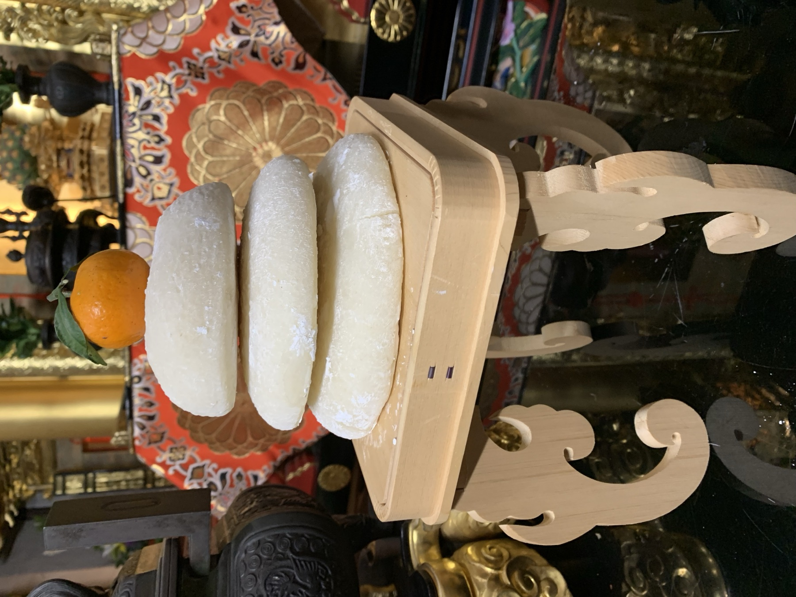
浄土真宗を開かれた宗祖・親鸞聖人のご遺徳を偲び、正信偈をともに唱えてお聴聞する、一年でもっとも大切な法要です。親鸞聖人のひ孫にあたる3代目・覚如上人が、聖人の33回忌にそのご遺徳を讃えて絵巻物と文章に表されたことに由来します。
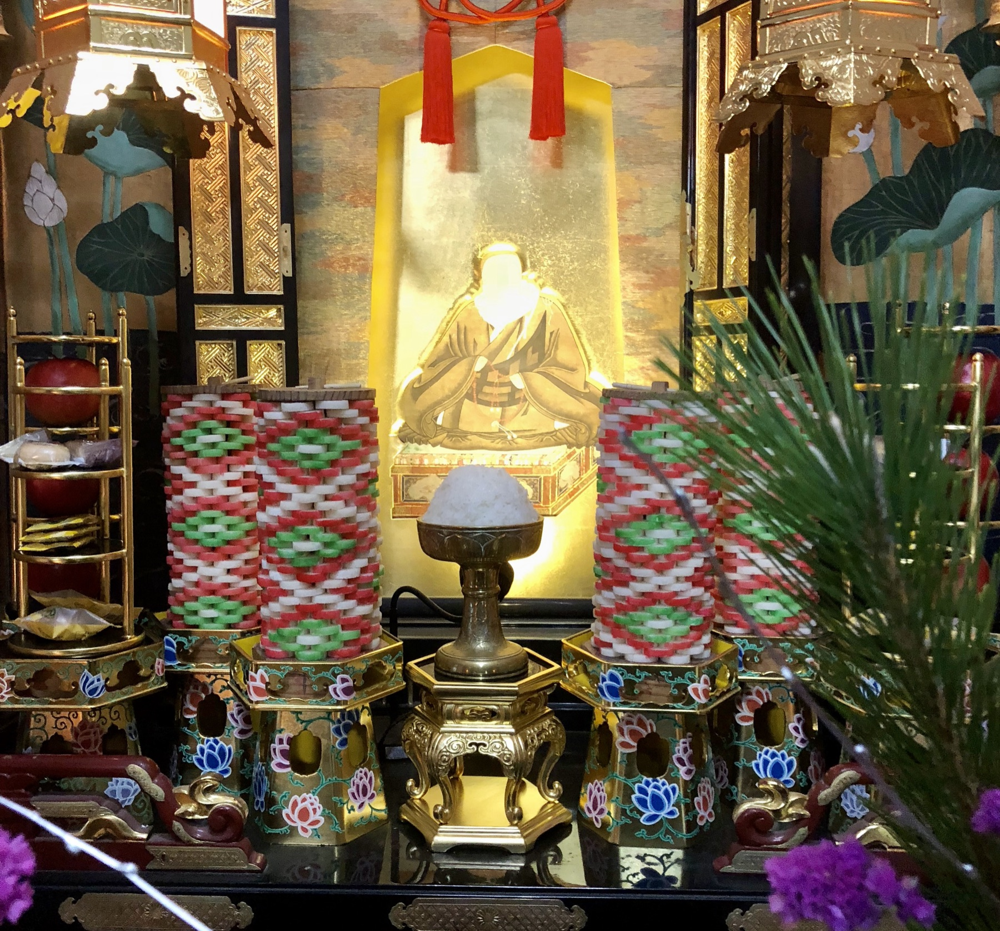
春のお彼岸にあわせて勤める法要です。永代経法要は、門信徒の方々のご懇念によりお念仏のみ教えが末永く受け継がれていくことを願う法要として、彼岸会とあわせてお勤めしています。真西に沈む夕陽の輝きを眺めながら、遠いご先祖から私までの「いのちのバトン」に想いを馳せる機会でもあります。
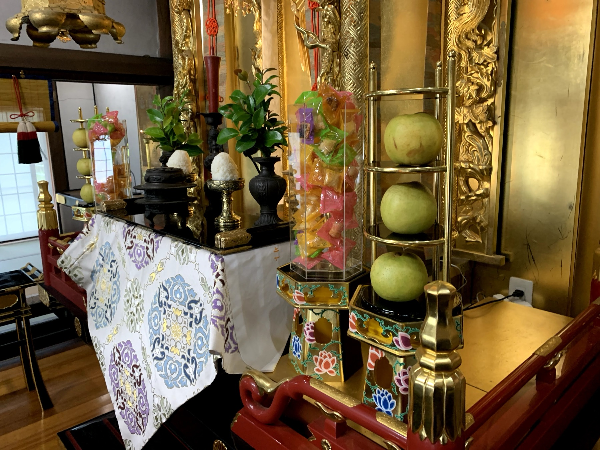
本願寺第8代・蓮如上人の祥月命日にお勤めする法要です。日頃お勤めする正信偈は、蓮如上人が門徒とともに読誦するお勤めとして採用されたことに由来しています。当日は「おみ足洗いの蓮如さま」の紙芝居の上演（動画上映）も行います。
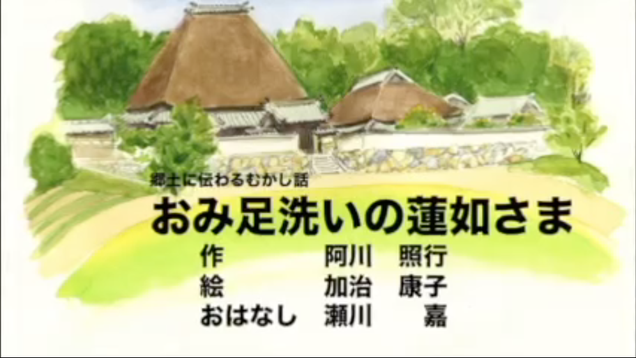
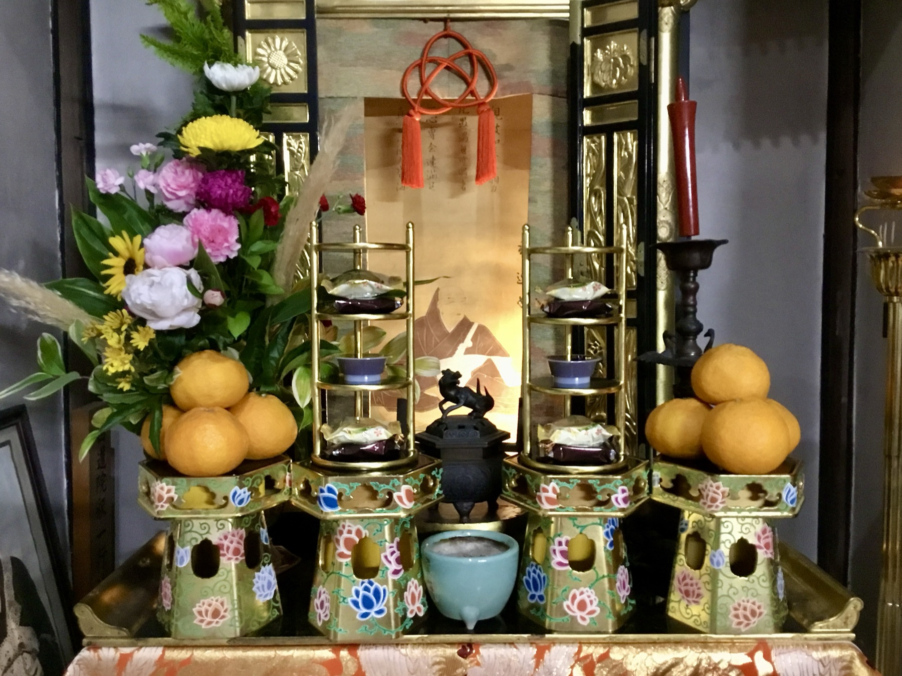
浄土真宗を開かれた親鸞聖人の誕生をお祝いする法要です。
以前は正泉寺・光泉寺と三か寺合同の婦人会で行っておりましたが、残念ながら会員の高齢化などで2026年度末で終息することとなりました。
4月から婦人以外にもお誘いして新たな形を模索中です。
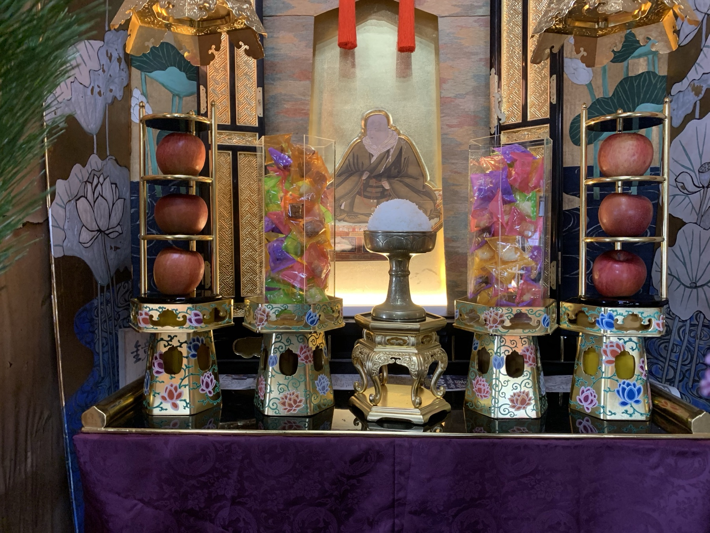
お盆にあわせて勤める法要です。「盂蘭盆」という言葉はインドのサンスクリット語に由来し、お釈迦さまの弟子・目連尊者にまつわる救いの物語がその由来とされています。
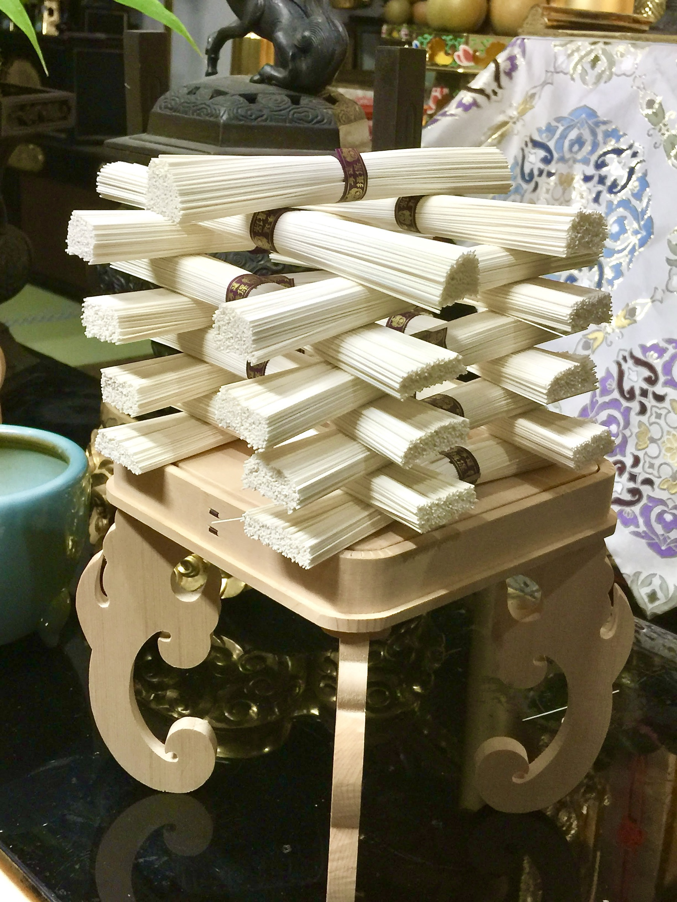
秋のお彼岸にあわせて勤める法要です。春と同様に永代経法要もあわせてお勤めし、遠いご先祖から受け継がれてきたお念仏のみ教えに思いを馳せます。
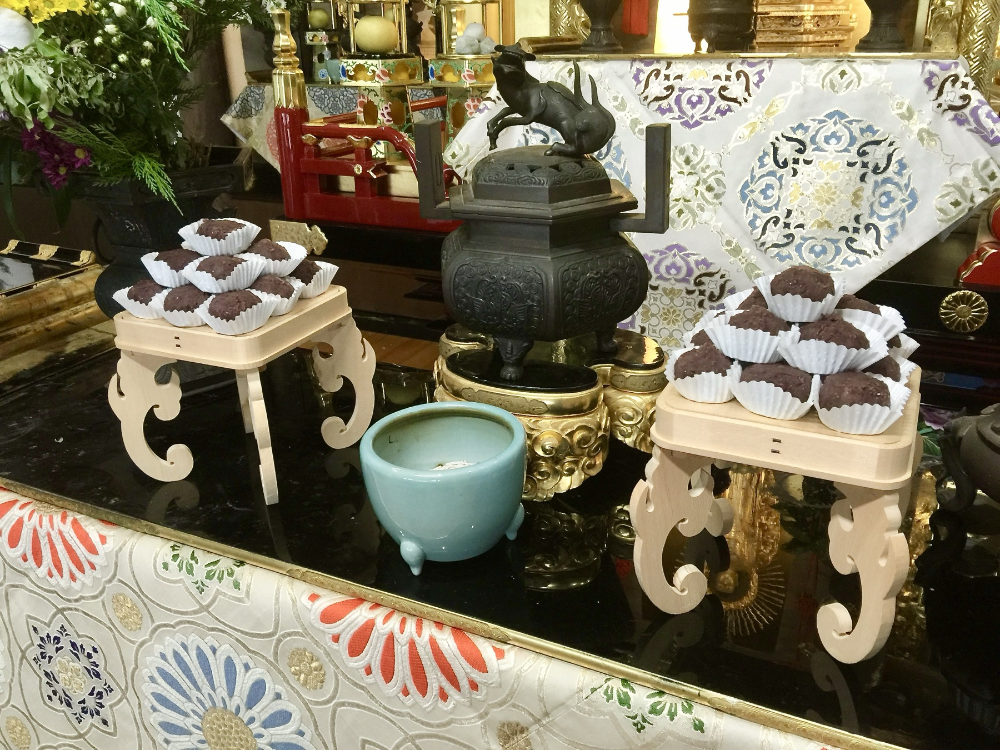
一年を締めくくるおつとめです。鐘をつく前に阿弥陀さまへお礼参りをし、その後は毎年午前1時頃まで、どなたでも待たずに梵鐘をついていただけます。境内に温かい飲み物とお菓子をご用意しております。夜間の運転や移動が難しい方のために、昼の部でも除夜の鐘をついていただけます。
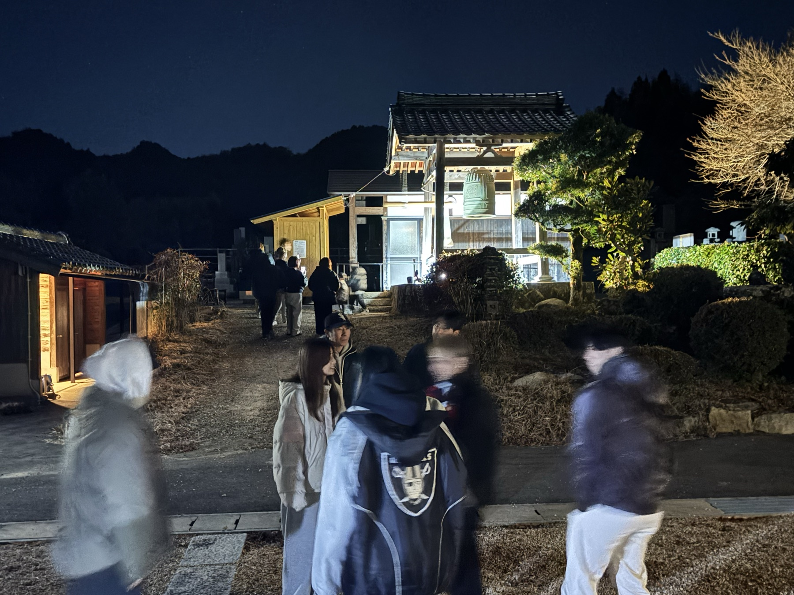
恒例法要のほか、ご縁に応じて臨時に勤める法要です。ご自宅のお仏壇へのお参り（年回法要・法事・お彼岸・お盆など）も承っております。日程や詳細はお気軽に寺務所までご相談ください。
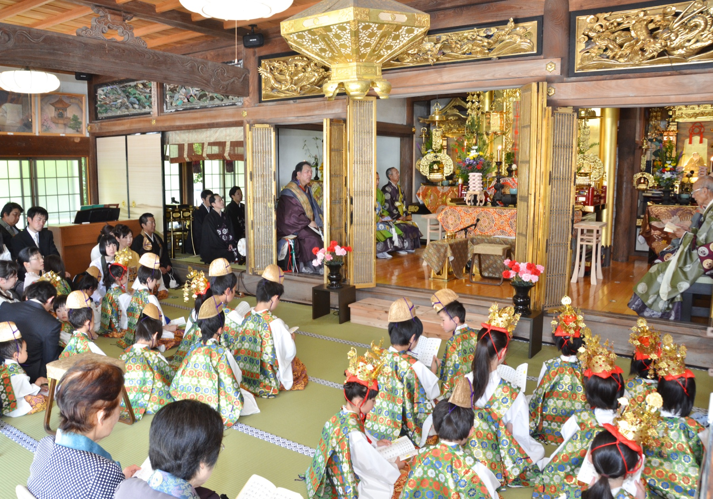
通常は本堂をお使いいただいておりますが、少人数（10名程度まで）の場合は仏間をご利用いただくことも可能です。ご事情に合わせてご案内いたしますので、ご遠慮なくご相談ください。
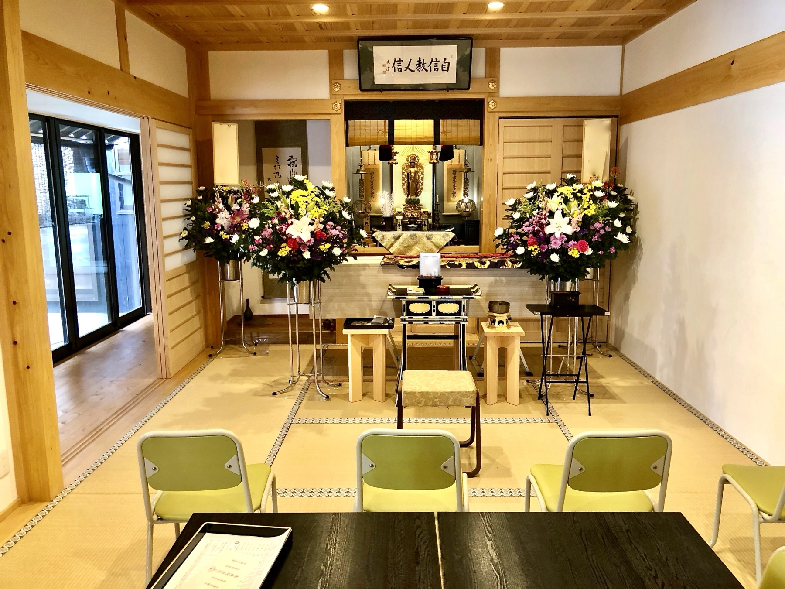
入門式、結婚式、初参式（赤ちゃんの初参り）などの慶事や各種儀式についても承っております。
毎年お盆前の7月1日と報恩講前の12月1日に行なっております。真鍮（しんちゅう）製の仏具についたくもりや油煙の曇りをとってピカピカに磨き上げます。先人が大切に扱われた仏具に触れながら、西円寺の歴史も感じていただきたく存じます。
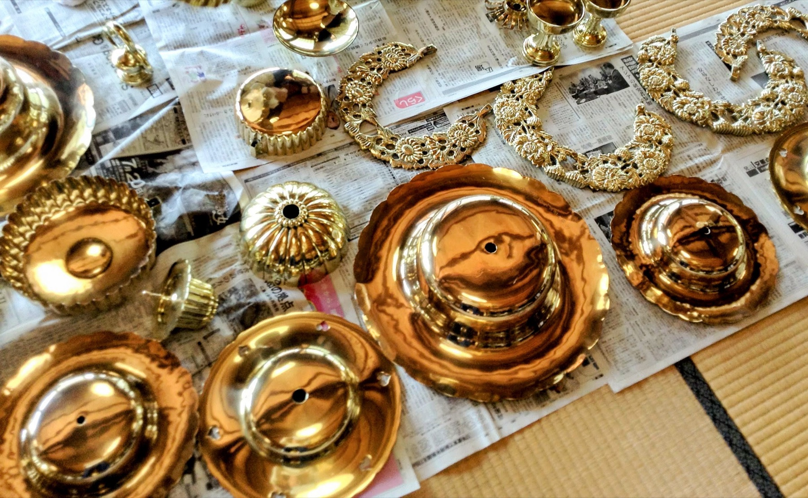
お釈迦さまの誕生をお祝いする行事です。田布施町の「さくらまつり」にあわせて開催します。
田布施地域交流館のお隣（ハミングロードを町役場の方に曲がったところ）のお庭に白象と花御堂を設置し、幟を立てています。お釈迦さまの像に甘茶をかけてお祝いしましょう。お越しになった方には「カンロ飴」の接待もございます（お釈迦さまの誕生時、空から龍が甘い「甘露の雨」を降らせてお祝いしたという伝承に由来しています）。
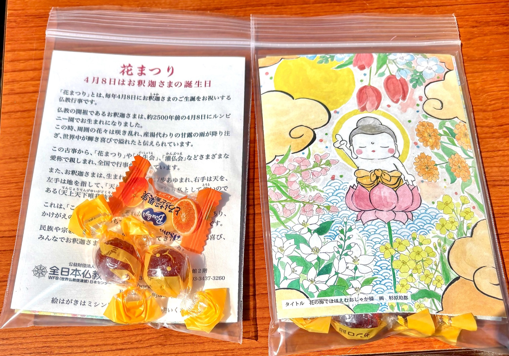
お釈迦さまが35歳の12月8日未明、菩提樹の下で悟りを開かれた（真の幸せに到る道を発見された）ことを記念するお祝いの行事です。田布施町仏教会の主催で、毎年12月8日に近い日で開催されています。
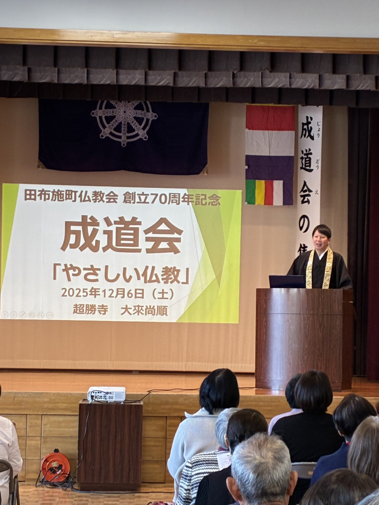
熊毛中組（くまげなかそ・田布施・平生地区の寺院グループ）が主催する歴史ある勉強会です。仏教講習会は、インドの「雨期」を日本語に訳した「安居（あんご）」という勉強会が元になっております。雨が降る季節は外の修行ができないので僧侶は勉強をしました。その形に習って熊毛中組も年に一度、本願寺で活躍されている講師の話を聞くようになり、80年以上の歴史があります。
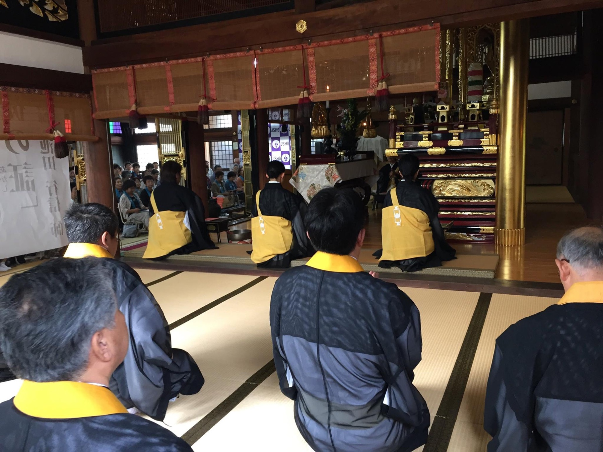